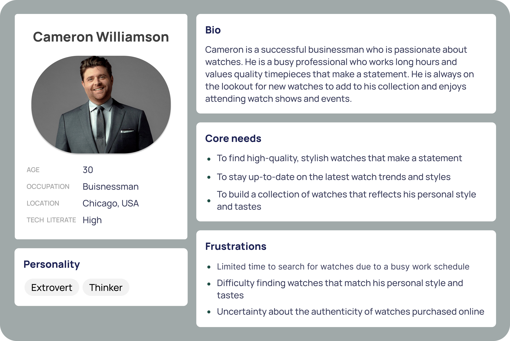

Chronos
UI + UX | UX Research | Heuristic Evaluation | Usability Metrics
Our goal is to create a platform for Chinese immigrant seniors to connect with their culture and people of similar backgrounds in their community with a senior friendly interface.
Roles and Responsibilites
- Remote and In-Person UX Research
- Usability Testing
- User Interviews
- Heuristic Evaluations
- User Personas
- Ideation Sketching
- Wire-framing
- Prototyping
Project Context
- Spring 2023
- School Project
Tools Used
- Figma
- VS Code
- GitKraken
THE PROBLEM
Many watch shopping websites often provide insufficient information about the products they sell, which can make it difficult for customers to make informed decisions about their purchases.
THE SOLUTION
Create a website that uses clean and simple designs, clear navigation, and visual hierarchy to guide users to relevant information.
- The landing page on the website first introduces the user to 3 popular categories of watches to guide them to make an informed purchase

Address significant problems with other event watch websites that were identified through user research and heuristic evaluations.
- Many watch selling websites do not offer personalized recommendations based on a user's browsing or purchase history.
- Inconsistent or incomplete product information can make it challenging for users to compare products and make informed purchasing decisions.
- Some watch selling websites may not be transparent about the origin, quality, or authenticity of their products.

Recommend watches that align with the needs of the intended user demographic.
- Offering personalized promotions based on user behavior, such as email campaigns, can help drive repeat business and increase user engagement on the website.
- Allowing users to provide feedback on products they have purchased or browsed can help website owners generate personalized recommendations based on user preferences.
UX RESEARCH
User Interviews
During the interviews, I would use a semi-structured approach, which would allow me to ask open-ended questions while also ensuring that I cover all of the key topics. The interview questions would focus on understanding user needs, pain points, and preferences related to watch websites. Some sample questions could include:
- How do you currently shop for watches online?
- What do you like and dislike about watch websites you have used in the past?
- How important is personalized recommendations to you when shopping for watches online?
- How do you typically make a decision about which watch to purchase?
- What kind of information do you need to feel confident about making a purchase?

Heuristic Evaluation
The goal of using heuristic evaluation is to identify pain points and usability issues with existing watch selling websites and to note them down. I took the following steps for conducting this heuristic evaluation.
- Identify the heuristics - I would start by identifying a set of heuristics to evaluate the website against.
- Evaluate the website - Next, I would conduct a thorough evaluation of the website based on the identified heuristics.
- Prioritize issues - After completing the evaluation, I would prioritize the identified issues based on their severity and impact on the user experience.
- Create a report - Finally, I would create a report summarizing the evaluation findings, including recommendations for improving the website's usability and design.

Usability Testing
The goal of the usability testing was to evaluate the website's navigation and organization to ensure that users can easily find the information they need, such as product descriptions and pricing. We took the following steps to do so:
- We needed to access the website's visual design to ensure that it is appealing, engaging, and easy to read, with appropriate use of colors, typography, and imagery.
- Testing the website's search functionality to ensure that it returns relevant results and is easy to use.
- Evaluating the website's checkout process to ensure that it is streamlined, efficient, and easy to complete.
PERSONAS
Personas help to ensure that the website is designed with the user's needs and preferences in mind. This can lead to a more user-centered design that is more likely to meet the needs of the target audience.

SKETCHES
After looking at some inspiration and researching UX for e-commerce websites, I came up with some ideation wireframes.
Ideation Wireframes
COLOURS, LOGO, FONT
FINAL DESIGN

Landing Page
- In our landing page we wanted to provide users with clear and easy-to-understand options for navigating the website, such as links to different product categories or search bars.
Product and Checkout Cart
- The checkout process is a critical component of any e-commerce website, including a watch website. It is the final step in the customer journey, where users make the decision to purchase a product.
- A poorly designed checkout process can be frustrating for users and may cause them to abandon their purchase. By designing a streamlined and intuitive checkout process, users are more likely to complete their purchase and have a positive experience on the website.
- We wanted to provide users with as much information as possible for them to purchase the product. Such as user reviews and the option to leave a review and rate the product themselves.
Product Categories
- Watches are categorized into very specific categories in order for users to be able to find exactly what they are looking for.
Watch Page
- Watches are organized so that users are able to scroll to find any watch they want.
- Users are able to filter their selection by selecting specific filters for watches.
CONCLUSIONS
This project has taught me a very valuable lession about designing UI for a website. I learned that simplicity and clarity are critical in website design, especially when it comes to e-commerce. A cluttered or confusing website can be overwhelming and make it difficult for users to find what they are looking for. By focusing on simplicity and clarity, I was able to create a website that is easy to navigate and use.
What I've Learned
Consistency and branding
- Consistency is important in website design, especially when it comes to branding. I learned that creating a consistent visual language and branding helps to create a sense of trust and credibility with users.
Importance of mobile responsiveness
- With the increasing use of mobile devices, designing a website that is mobile-responsive is critical. I learned that designing for mobile devices requires a different approach, and that ensuring a seamless user experience across different devices is key to the success of the website.